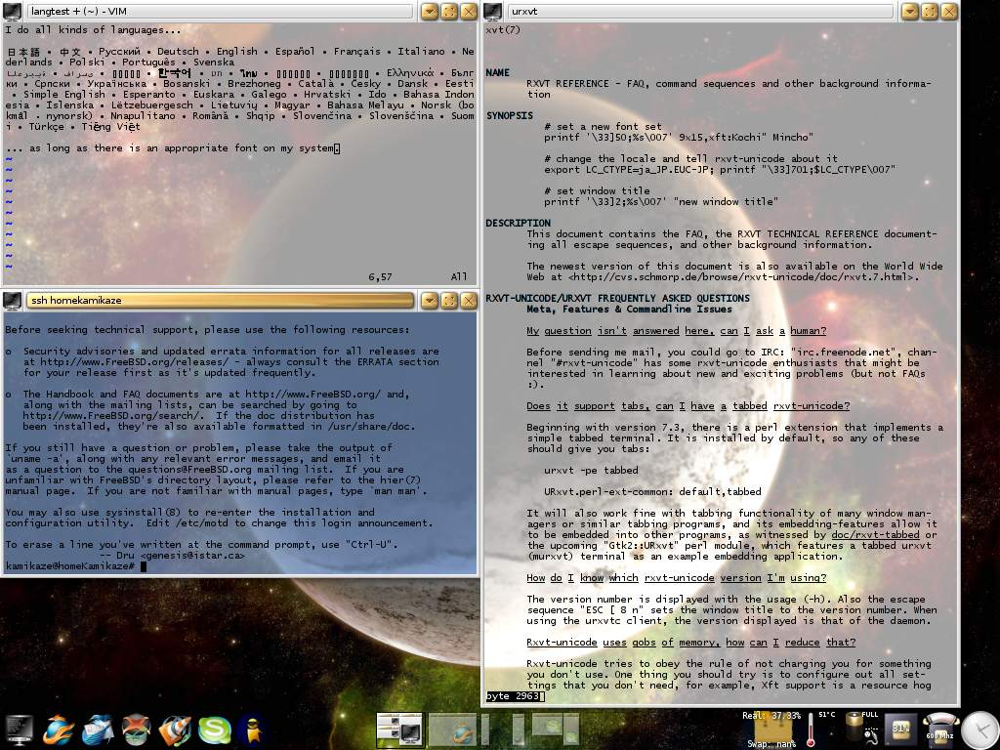

2.30. RXVT-Unicode¶
RXVT-Unicode ist ein Terminal Emulator, der UTF-8 (Unicode), mehrere Tranzparenzmodi und Font Rendering über xft (Antialiasing) unterstützt.
2.30.1. Einleitung¶
 RXVT-Unicode (kurz urxvt) ist ein nachbau des Terminal Emulators RXVT. Urxvt kommt mit zahlreichen, teilweise ungewöhnlichen Features, wie die gleichzeitige Verwendung mehrerer verschiedener Schriftarten in einem Terminal Fenster um möglichst alle Zeichen des Unicode Zeichensatzes darzustellen. Außerdem bietet das Programm einen Daemon/Client Modus, um Arbeitsspeicher zu sparen. Unabhängig von der eingestellten Locale wandelt RXVT-Unicode alle Zeichen intern in die entsprechenden Unicode Character, auf diese Weise ist das Programm in der Lage so ziemlich jeden Zeichensatz darzustellen.
{kind=link}
2.30.2. Konfiguration¶
RXVT-Unicode wird wie Xterm und viele andere Terminal emulatoren in ~/.Xdefaults konfiguriert.
URxvt.depth: 32
#URxvt.background: rgba:cfff/cfff/cfff/7fff
URxvt.font: xft:lucida console:pixelsize=10
URxvt.scrollBar: false
URxvt.saveLines: 65535
URxvt.inheritPixmap: true
#URxvt.background: #00FFFF
#URxvt.tintColor: #FFFFFF
#URxvt.reverseVideo: true
#URxvt.color1: #FF4040
#URxvt.color2: Green
#URxvt.color4: #8080FF
#URxvt.color5: Magenta
URxvt.perl-ext-common: mark-urls
URxvt.urlLauncher: firefox
Dies ist eine Beispielkonfiguration, die hier nicht weiter kommentiert wird. Die Dokumentation des Programms ist recht ausführlich und lässt selten Fragen unbeantwortet. Die einzelnen Parameter werden in urxvt(1) beschrieben, die FAQ urxvt(7) enthält sehr viele Beispiele und urxvt(3) enthält Informationen über die Anbindung von Perl Skripten.
2.30.3. Daemon/Client Einrichtung¶
Die Einrichtung des Daemons ist trivial. Ein Eintrag in der Datei ~/.xsession für die, die einen X Login Mangaer wie xdm, kdm oder gdm verwenden oder ~/.xinitrc für all jene, die X über den Befehl startx starten:
/usr/local/bin/urxvtd -o -f
Der korrekte Pfad kann mit folgendem Befehl ermittelt werden:
$ which urxvtd
Der Parameter -o sorgt dafür, dass der Daemon sich automatisch mit der X Session beendet. Der Parameter -f sorgt dafür, dass der Daemon im Hintergrund läuft. Die Zeile ist also äquivalent zum Aufruf:
/usr/local/bin/urxvtd -o &
Clients werden einfach über den Befehl urxvtc gestartet. Die Dokumentation zum Daemon findet sich in urxvtd(1).
2.30.4. SSH mit farbigem Hintergrund¶
Inspiriert von Screenshots im Forum, ist dieses kleine Skript entstanden, dass in ~/bin abgelegt werden kann um eine farbig hinterlegte SSH Session in einem neuen Fenster zu öffnen (siehe Screenshot weiter oben). Die Farbe wird dabei nicht vorkonfiguriert, sondern aus einem Hashwert über die SSH Parameter generiert. Auf diese Weise ist die Farbe reproduzierbar.
#!/bin/sh
title="ssh $@"
tint=$(sha256 -qs "$title"|grep -Eo '.{6}$'|sed -E 's|^|#|1')
exec /usr/local/bin/urxvt$(echo "$0"|grep -Eo 'c$') -tint "$tint" -title "$title" -e ssh "$@"
Das Skript ist nur unter FreeBSD 6 getestet. Der Autor hat es unter folgendem Namen angelegt ~/bin/ssht und einen Hardlink zu ~/bin/sshtc. Der Name steht als Abkürzung für SSH Terminal, respektive SSH Terminal Client.
2.30.5. Verweise¶
x11/rxvt-unicode in den FreeBSD Ports.
x11/rxvt-unicode in Pkgsrc.
Die RXVT-Unicode Homepage.
Die RXVT-Unicode FAQ.
Zuletzt geändert: 2021-05-24